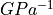

IAPWS G7-04¶
The computation is based on the parameters provided by the IAPWS 2004 [1].
Henry Contant: kh¶
The Henry constant  is defined as shown in equation Eq.1.
is defined as shown in equation Eq.1.
(1)¶
 : liquid-phase fugacity
: liquid-phase fugacity : mole fraction of the solute
: mole fraction of the solute
The Henry’s constant  is given as a function of temperature by:
is given as a function of temperature by:
(2)¶


 : critical temperature of the solvent as recommended by IAPWS [2] (647.096 for H2O and 643.847 K for D2O)
: critical temperature of the solvent as recommended by IAPWS [2] (647.096 for H2O and 643.847 K for D2O) is the vapor pressure of the solvent at the temperature of interest and is calculated from the correlation of Wagner and Pruss for H2O [3] and from the correlation of Harvey and Lemmon for D2O [4].
is the vapor pressure of the solvent at the temperature of interest and is calculated from the correlation of Wagner and Pruss for H2O [3] and from the correlation of Harvey and Lemmon for D2O [4].
Both equations have the form:
(3)¶
 is 6 for H2O and 5 for D2O
is 6 for H2O and 5 for D2O is the critical pressure of the solvent recommended by IAPWS [2] (22.064 MPa for H2O and 21.671 MPa for D2O)
is the critical pressure of the solvent recommended by IAPWS [2] (22.064 MPa for H2O and 21.671 MPa for D2O)
The Henry’s constant has a dimension of pressure expressed here in .
Vapor-Liquid Distribution Constant: kd¶
The liquid-vapor distribution constant  is defined as shown in equation Eq.4.
is defined as shown in equation Eq.4.
(4)¶
- : mole fraction of the solute
 is the vapor-phase solute mole fraction in equilibrium with the liquid
is the vapor-phase solute mole fraction in equilibrium with the liquid
The vapor-liquid distribution constant k_D is given as a function of temperature by:
(5)¶
 : -0.023767 for H2O and -0.024552 for D2O.
: -0.023767 for H2O and -0.024552 for D2O.In both cases,  has the following form:
has the following form:
(6)¶
- is 6 for H2O and 4 for D2O
Molar fractions¶
(7)¶